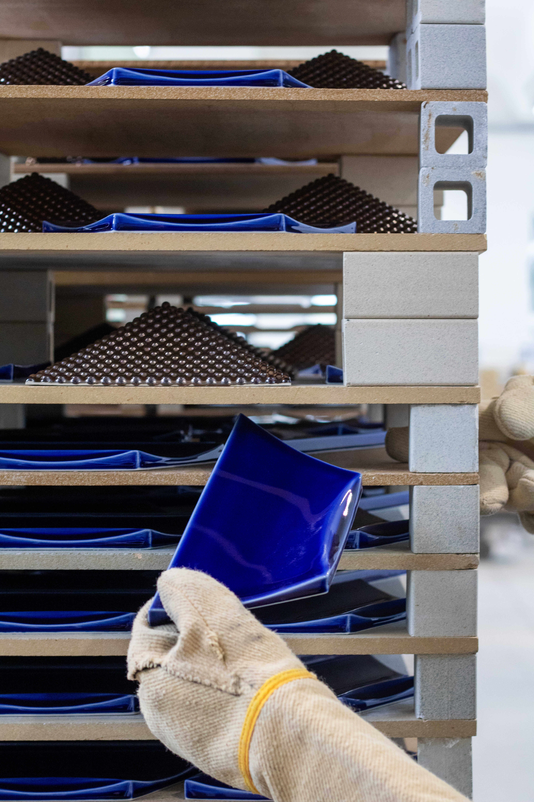
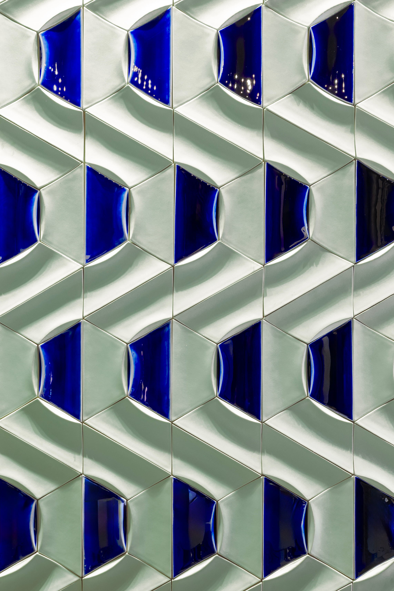
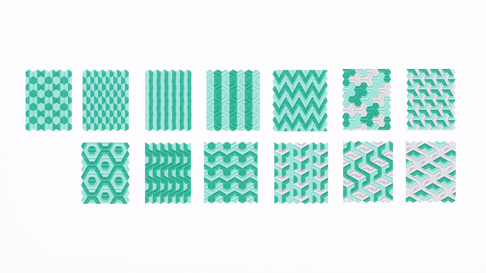

Fuga
Fuga is a new collection developed in collaboration with DeMarchi Verona, extending the design language “From Finite to Infinite.” Through a modular geometric system, the collection explores how color, repetition, light, and shadow can transform a single structure into continuously changing visual expressions.
Inspired by both the musical structure of a fugue and the idea of transformation between the finite and the infinite, Fuga balances order and variation within a highly adaptable modular system. More than a decorative surface, it becomes a tool for creating evolving spatial atmospheres.


The collection includes 13 different variations, all generated from the same geometric logic through changes in orientation, repetition, and color.
Modules can be rotated, mirrored, and combined in multiple ways, producing patterns that range from structured and rhythmic to fluid and continuous. This flexibility allows Fuga to adapt to different spaces and scales, transforming the collection into an open system for spatial expression.
